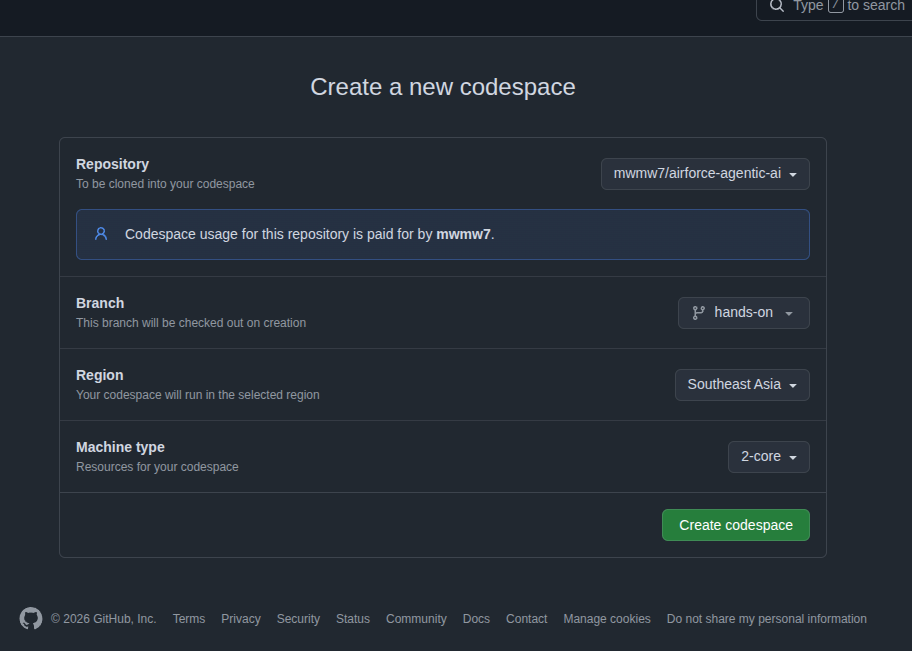
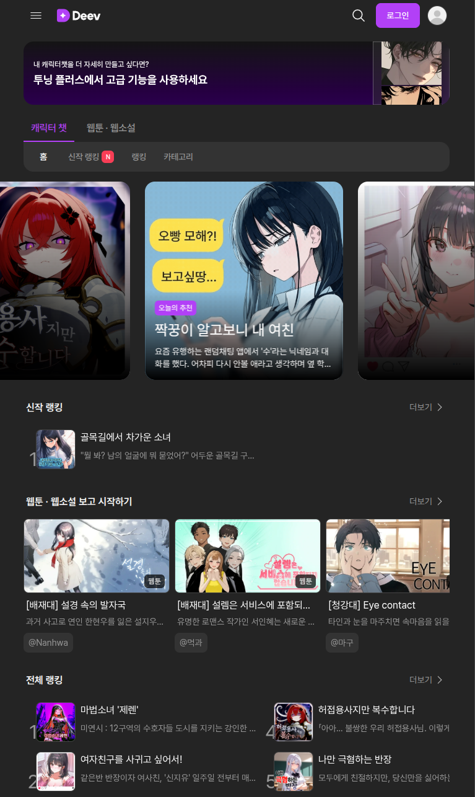

graph LR; __start__([__start__]) searchDocs(searchDocs) askRadar___start__(__start__) askRadar_agent(agent) askRadar_tools(tools) askRadar_askHuman(askHuman) askRadar_stop(stop) remember(remember) judge(judge) approve(approve) __end__([__end__]) __start__ --> searchDocs; __start__ --> askRadar___start__; approve --> __end__; askRadar_stop --> remember; judge --> approve; searchDocs --> remember; remember -.-> judge; remember -.-> approve; subgraph askRadar askRadar___start__ --> askRadar_agent; askRadar_tools --> askRadar_agent; askRadar_agent -.-> askRadar_tools; askRadar_agent -.-> askRadar_stop; askRadar_agent -.-> askRadar_askHuman; askRadar_askHuman -.-> askRadar_agent; askRadar_askHuman -.-> askRadar_stop; end
| Tooning Edu | 웹툰 제작 툴 |
| Tooning Plus | Tooning 의 유료 고급 기능 |
| Deev | 캐릭터 챗 서비스. 오늘 오후에 이 서비스의 실제 지시문 탐지 코드를 봅니다 |

.devcontainer/). "준비 끝" 이 보이면 pnpm agentgit clonefork 는 안 해도 된다. 끝나고 남기고 싶으면 push 할 때 자동으로 내 fork 가 생긴다
// ===== TODO n 을 찾는다pnpm agent → 화면에 새 줄이 생긴다| 늦었으면 | 상태 |
|---|---|
pnpm step 1 | 1 ~ 8 전부 남음 (처음 상태) |
pnpm step 4 | 1 ~ 3 풀림, 4번을 풀 차례 |
pnpm step 8 | 1 ~ 7 풀림, 8번만 남음 |
pnpm step done | 전부 풀림 (main 과 같음) |
강사가 "4단계 시작합니다" 하면 늦은 사람도 같은 숫자 4. 정답은 main 브랜치에서 가져오고, 빈칸이 든 파일만 덮어쓴다 (먼저 묻는다)
| 시간 | 단계 | 같이 붙이는 것 | 공군 요청 항목 |
|---|---|---|---|
| 09:00 ~ 09:50 | 0 · 1 · 2 | 첫 실행, 레이더 부하 데려오기, 부하에게 도구 하나 더 | Subagent · Agent Loop · Harness · Tool |
| 10:05 ~ 11:00 | 3 · 4 · 5 | 규정집 찾기, 날씨 MCP, 동시에 모으기 | RAG · MCP · Task Decomposition |
| 11:15 ~ 12:00 | 6 · 7 · 8 | Jev 판정, 사람 답으로 이어가기, 기억 | 판정 모델 · HITL · Checkpoint · Memory |
| 13:00 ~ 14:10 | 시연 | 자료 속 지시문, 모델 교체, 실행 기록 | Guardrail · Sandbox · Trace |
| 14:30 ~ 16:00 | 특강 (이현우) | Langfuse 로 검증과 활용 | Evaluation · Observability |
휴식 09:50 · 11:00 · 14:10 — 휴식 뒤 늦은 사람은 pnpm step 3 · pnpm step 6
TOOL search_docs(보고 그대로) HUMAN 종합 — 담당자가 결정합니다 │ 보고 │ 관련 규정 │ · 관련 규정 없음 │ 기억 │ · 비슷한 보고 없음 │ Jev 판정 │ · watch · 확신 0% · 위험도 0단계 (전혀 안 위험함, 심심한 하루) … │ 코드 권고 │ · Jev 도 헷갈려함 → 사람이 한 번 더 확인 │ 모델이 정리한 사실 │ · (TODO 1: 레이더 부하가 아직 없어서 확인한 사실이 없습니다) STOP 답(w)을 받았지만 그래프를 이어가지 않았습니다 — TODO 7 DECIDE Jev 도 헷갈려함 → 사람이 한 번 더 확인 ← Jev watch 0% + 코드 규칙
[DECIDE] 가 찍힌다. 빈칸이 비어도 프로그램은 멈추지 않는다- .addNode("askRadar", async () => ({ facts: "(TODO 1: 레이더 부하가 아직 없…+ .addNode("askRadar", radarAgent) // Subagent: 안에 age…
ask-radar.ts 는 1일차에 만든 것과 같은 도구 쓰는 Agent 하나다compile() 된 그래프를 넣으면 그게 부하(Subagent)다TOOL search_docs(보고 그대로) SUB ┏━ askRadar 레이더 부하 Agent (Subagent) — 여기부터 ┃ 줄은 부하의 … ┃ LLM 1회째 → 도구 쓰기: look_radar 35ms ┃ TOOL look_radar(어디: 서울 상공에 정체불명의 둥근 비행체가 떠 있어요. … ┃ LLM 2회째 → 도구 쓰기: look_closer 1ms ┃ TOOL look_closer(어디: 서울 상공에 정체불명의 둥근 비행체가 떠 있어요.… ┃ LLM 3회째 → 도구 쓰기: look_weather 1ms ┃ LLM 4회째 → 사실 정리 (도구 안 씀) 0ms SUB ┗━ askRadar 끝 · 모델 4회 호출, 사실 정리 완료 → 부모에게
[SUB] ┏━ askRadar 띠가 열리고, 담당자 화면에 레이더 · 확대 줄이 생긴다graph TD; __start__([__start__]) searchDocs(searchDocs) askRadar(askRadar) remember(remember) judge(judge) approve(approve) __end__([__end__]) __start__ --> searchDocs; approve --> __end__; askRadar --> remember; judge --> approve; searchDocs --> askRadar; remember -.-> judge; remember -.-> approve;
채우기 전 (pnpm step 1): askRadar 는 함수 하나짜리 가짜 부하
graph TD; __start__([__start__]) searchDocs(searchDocs) askRadar___start__(__start__) askRadar_agent(agent) askRadar_tools(tools) askRadar_askHuman(askHuman) askRadar_stop(stop) remember(remember) judge(judge) approve(approve) __end__([__end__]) __start__ --> searchDocs; approve --> __end__; askRadar_stop --> remember; judge --> approve; searchDocs --> askRadar___start__; remember -.-> judge; remember -.-> approve; subgraph askRadar askRadar___start__ --> askRadar_agent; askRadar_tools --> askRadar_agent; askRadar_agent -.-> askRadar_tools; askRadar_agent -.-> askRadar_stop; askRadar_agent -.-> askRadar_askHuman; askRadar_askHuman -.-> askRadar_agent; askRadar_askHuman -.-> askRadar_stop; end classDef new stroke:#F2B544,stroke-width:3px class askRadar___start__,askRadar_agent,askRadar_tools,askRadar_askHuman,askRadar_stop new linkStyle 2,4,7,8,9,10,11,12,13 stroke:#F2B544,stroke-width:3px
채운 뒤 (pnpm step 2): askRadar 가 agent ⇄ tools 루프로 펼쳐진다
pnpm see:steps → docs/graphs/step-*.mdflowchart LR
A["agent<br/>모델 호출"] -- "tool_calls: [{name: look_radar, arguments: {어디: 서울}}]" --> T["tools<br/>내 코드 runTool()"]
T -- "{ role: tool, tool_call_id, content: 결과 JSON }" --> A
A -- "tool_calls 없음 → facts 2~3줄" --> E((END))runTool 이 한다. 모델은 파일도 네트워크도 못 만진다role: "tool" 메시지로 다시 모델에게flowchart TD
A[agent] --> R{route}
R -- "도구 원함 · steps < MAX_STEPS" --> T[tools]
R -- "도구 원함 · steps ≥ MAX_STEPS" --> S[stop]
R -- "도구 안 원함" --> E((END))
R -- "모델이 늦음" --> H[askHuman]
T --> Aif (!wantsTool) return END; // 사실 정리 끝 → 부모에게 if (state.steps >= MAX_STEPS) return "stop"; // 내 코드가 끊는다 return "tools";
SUB ┏━ askRadar 레이더 부하 Agent (Subagent) — 여기부터 ┃ 줄은 부하의 … ┃ LLM 1회째 → 도구 쓰기: look_radar 36ms ┃ STOP 모델을 이미 1번 불렀습니다. 더 부르지 않고 내 코드가 멈췄습니다. … SUB ┗━ askRadar 끝 · 강제 중단 MEMORY [file] 같은 사례 없음 (가장 비슷한 것 일치도 0.03 < 0.9) → Jev 에게… MEMORY [file] recall · Jev 참고용 비슷한 기억 (겹치는 단어 수) → 1건 JEV [local] System One 판정 · local 규칙 판정기 · 질문 3개 한 번에 · 1m… HUMAN 종합 — 담당자가 결정합니다 MEMORY [file] retain → .hindsight/control-room.json 에 1건 (실행번호 loop-…
[STOP] 은 부하만 끝낸다. 부모는 규정집 결과만 들고 판정과 담당자 화면까지 간다┃ NODE ▶ askRadar › agent 시작 · ← branch:to:agent ┃ │ steps 0 ┃ NODE ◀ askRadar › agent 끝 · 27ms ┃ │ steps 1 ┃ NODE ▶ askRadar › tools 시작 · ← branch:to:tools ┃ │ steps 1 ┃ NODE ▶ askRadar › agent 시작 · ← branch:to:agent ┃ │ steps 1 ┃ NODE ◀ askRadar › agent 끝 · 1ms ┃ │ steps 1 ┃ NODE ▶ askRadar › tools 시작 · ← branch:to:tools ┃ │ steps 2
steps: 1 만 돌려준다steps: Annotation<number>({ reducer: (prev, next) => prev + next })
messages: Annotation<Msg[]>({ reducer: (prev, next) => [...prev, ...next] })
facts: Annotation<string>() // 덮어쓰기┃ LLM 실패 radar.step1 0ms ┃ HUMAN 가짜 모델 이 60초 안에 답하지 않았습니다 (1회째 호출) SUB ┗━ askRadar 끝 · 담당자가 skip → 사실 없이 부모에게 HUMAN 종합 — 담당자가 결정합니다 DECIDE 감시 강화 — 사람이 결정 ← Jev scramble 90% + 코드 규칙
LLM_TIMEOUT_SEC 를 넘으면 끊는다RUN_TIMEOUT_SEC 를 넘어도 끊는다- // { type: "function", function: { name: "look_flight_plan", description: "…", parameter…+ { type: "function", function: { name: "look_flight_plan", description: "오늘 미리 통보되…+ parameters: { type: "object", properties: { 어디: { type: "string", description: "장소 …
- // if (name === "look_flight_plan") { … }+ if (name === "look_flight_plan") {+ const where = String(args.어디 ?? "");+ const plans: RadarRow[] = readJson("flight-plans.json");+ const found = plans.filter((p) => inRegion(p, where));+ return JSON.stringify({ 비행계획: found.length ? found.map(brief) : [`'${where.slice(0, …+ }
┃ LLM 3회째 → 도구 쓰기: look_flight_plan 0ms ┃ TOOL look_flight_plan(어디: 잠실 상공에 밤중에 드론 수십 대가 떼로 날… ┃ │ · 어디 잠실 상공 | 뭐가 드론 쇼 | 언제 - | 허가 신청 없… │ 비행 계획 │ · 잠실 상공 · 드론 쇼 · - · 신청 없음 (오늘 접수된 드론 쇼 없음…
data/api/flight-plans.json: 잠실 드론 쇼는 신청 없음[TOOL] look_flight_plan 이 찍히고 담당자 화면에 비행 계획 줄이 생긴다flowchart LR Q["보고 한 줄"] --> W["단어로 쪼개기"] W --> SC["규정집 10줄에<br/>겹치는 단어 수로 점수"] SC --> T["상위 3줄"] T --> EV["칠판 evidence"] EV --> J["judge · approve 가 본다"]
data/docs/rulebook.md 열 줄, 전부 가상- const scored = rules.map((rule) => ({ rule, score: 0 }));+ const scored = rules.map((rule) => ({+ rule,+ score: words(rule).filter((word) => question.includes(word)).length,+ }));
TOOL search_docs(보고 그대로) │ 3. 풍선, 연, 새 떼는 위협이 아니다. 공항 쪽으로 가면 공항에 알리… │ 2. 무전 응답이 없어도 느리게 바람 따라 움직이는 물체는 풍선이나 …
│ 관련 규정 │ · 3. 풍선, 연, 새 떼는 위협이 아니다. 공항 쪽으로 가면 공항에 … │ · 2. 무전 응답이 없어도 느리게 바람 따라 움직이는 물체는 풍선이…
flowchart LR
subgraph agent["내 Agent (MCP Host · Client)"]
A[agent] --> L["도구 목록 = 로컬 3개 + MCP 서버 것"]
end
subgraph srv["mcp-servers/weather (MCP Server · localhost:3333)"]
W["look_weather"]
end
L -- "listTools()" --> W
L -- "callTool()" --> WregisterTool 로 이름 · 설명 · 입력 모양 · 실행 함수를 등록 (4-1)- // server.registerTool("look_weather", { description: "...", inputSchema: { 어디: z.stri…+ server.registerTool(+ "look_weather",+ {+ description: "그 장소의 지금 날씨(하늘·구름·바람·시야·비행 가능 여부)를 본다. 보고에 나…+ inputSchema: { 어디: z.string().describe("장소 또는 보고 문장 그대로. 예: 한강 / 잠실 밤…+ },+ async ({ 어디 }) => ({ content: [{ type: "text", text: await lookWeather(어디) }] }),+ );
- return [];+ const { tools } = await c.listTools();+ mcpToolNames = new Set(tools.map((t) => t.name));+ log("mcp", `날씨 서버 연결 OK — 도구 ${tools.length}개 받음: ${tools.map((t) => t.name).…+ return tools.map((t) => ({+ type: "function",+ function: { name: t.name, description: t.description ?? "", parameters: t.inputSchema as…+ }));
- return JSON.stringify({ error: "TODO 4-2 미구현" });+ try {+ const result = await c.callTool({ name, arguments: args }, undefined, { timeout: 120_000…+ const content = result.content as { type: string; text?: string }[];+ return content.filter((x) => x.type === "text").map((x) => x.text ?? "").join("\n");+ } catch (e) {+ // 서버가 늦거나 죽어도 agent 는 멈추지 않는다. 결과 대신 사정을 돌려주면 모델이 "날씨 …+ return JSON.stringify({ error: `MCP 도구 ${name} 실패: ${(e as Error).message}` });+ }
┃ MCP 날씨 서버 연결 OK — 도구 1개 받음: look_weather ┃ MCP look_weather(어디: 서울 상공에 정체불명의 둥근 비행체가 떠 있어요…
[MCP] 날씨 서버 연결 OK — 도구 1개, 담당자 화면에 날씨 줄┃ MCP 날씨 서버 연결 실패 (http://localhost:3999/mcp) — 다른 터미널에서… ┃ LLM 1회째 → 도구 쓰기: look_radar 18ms ┃ LLM 2회째 → 도구 쓰기: look_closer 0ms ┃ LLM 3회째 → 사실 정리 (도구 안 씀) 0ms SUB ┗━ askRadar 끝 · 모델 3회 호출, 사실 정리 완료 → 부모에게 DECIDE 감시 강화 — 사람이 결정 ← 기억으로 판단 · Jev 생략
labs/agent/mcp.ts 의 connectMcp 가 null 을 돌려준다| 패턴 | 모양 | 한 줄 비유 | 우리 코드 |
|---|---|---|---|
| Tool-calling 루프 (ReAct) | agent ⇄ tools 왕복 | 혼자 일하는 직원 | 있음 — ask-radar.ts (1단계) |
| Supervisor | 감독 모델이 부하 여럿 중 누구에게 넘길지 고름 | 팀장이 팀원을 지명 | 없음 — 다음 단계 |
| Orchestrator–Workers | 일을 쪼개 동시에 뿌리고 합침 | 팀장이 일을 쪼개 동시에 배분 | 있음 — main.ts (5단계) |
| Router | 입력 보고 갈림길 하나, 루프 없음 | 안내 데스크 | route 함수가 축소판 |
| Evaluator–Optimizer | 만들기 → 평가 → 다시 만들기 | 퇴고하는 작가 | 실제 사례 시연: 3D 이펙트 생성 → 렌더 → 평가 → 재생성 |
interrupt 로 사람이 끼어드는 것은 패턴이 아니라 어느 패턴에나 끼우는 공통 부품이다. LangChain 이 권하는 순서: ReAct 하나로 시작하고, 도구가 열 개를 넘거나 역할이 갈리면 쪼개라
| Worker | Subagent | |
|---|---|---|
| 하는 일 | 정해진 일 하나 | 목표 하나를 받아 알아서 끝냄 |
| 모델 호출 | 없음 | 있음, 반복 (도구를 고르고 또 고름) |
| 실행 횟수 | 항상 같음 | 상황마다 다름 |
| 코드 모양 | 함수 하나 | 그래프 하나 (agent ⇄ tools) |
| 우리 코드 | searchDocs (3단계) | askRadar (1단계) |
.addNode("searchDocs", searchDocsNode) // 함수
.addNode("askRadar", radarAgent) // compile() 된 그래프- .addEdge(START, "searchDocs")- .addEdge("searchDocs", "askRadar")- .addEdge("askRadar", "remember")+ .addEdge(START, "searchDocs")+ .addEdge(START, "askRadar")+ .addEdge(["searchDocs", "askRadar"], "remember")
LangGraph 는 한 단계의 노드가 전부 끝나야 다음으로 간다. 배열로 묶으면 "둘 다 끝나야" 가 코드에 보이고, 가지 길이가 달라도 안전하다
NODE ▶ searchDocs 시작 · ← branch:to:searchDocs NODE ◀ searchDocs 끝 · 1ms NODE ▶ askRadar 시작 · ← branch:to:askRadar
채우기 전: 규정집이 끝나야 레이더가 출발
NODE ▶ askRadar 시작 · ← branch:to:askRadar NODE ▶ searchDocs 시작 · ← branch:to:searchDocs NODE ◀ searchDocs 끝 · 1ms NODE ◀ askRadar › agent 끝 · 1ms NODE ◀ askRadar 끝 · 2239ms
채운 뒤: 둘이 같이 출발, remember 는 둘 다 끝나야
▶ askRadar 와 ▶ searchDocs 가 나란히 시작하고, remember 가 ← join:searchDocs+askRadar 로 깨어난다graph TD; __start__([__start__]) searchDocs(searchDocs) askRadar___start__(__start__) askRadar_agent(agent) askRadar_tools(tools) askRadar_askHuman(askHuman) askRadar_stop(stop) remember(remember) judge(judge) approve(approve) __end__([__end__]) __start__ --> searchDocs; approve --> __end__; askRadar_stop --> remember; judge --> approve; searchDocs --> askRadar___start__; remember -.-> judge; remember -.-> approve; subgraph askRadar askRadar___start__ --> askRadar_agent; askRadar_tools --> askRadar_agent; askRadar_agent -.-> askRadar_tools; askRadar_agent -.-> askRadar_stop; askRadar_agent -.-> askRadar_askHuman; askRadar_askHuman -.-> askRadar_agent; askRadar_askHuman -.-> askRadar_stop; end
채우기 전 (pnpm step 5): 규정집 → 레이더 → remember, 한 줄로
graph TD; __start__([__start__]) searchDocs(searchDocs) askRadar___start__(__start__) askRadar_agent(agent) askRadar_tools(tools) askRadar_askHuman(askHuman) askRadar_stop(stop) remember(remember) judge(judge) approve(approve) __end__([__end__]) __start__ --> searchDocs; __start__ --> askRadar___start__; approve --> __end__; askRadar_stop --> remember; judge --> approve; searchDocs --> remember; remember -.-> judge; remember -.-> approve; subgraph askRadar askRadar___start__ --> askRadar_agent; askRadar_tools --> askRadar_agent; askRadar_agent -.-> askRadar_tools; askRadar_agent -.-> askRadar_stop; askRadar_agent -.-> askRadar_askHuman; askRadar_askHuman -.-> askRadar_agent; askRadar_askHuman -.-> askRadar_stop; end classDef new stroke:#F2B544,stroke-width:3px linkStyle 1,5 stroke:#F2B544,stroke-width:3px
채운 뒤 (pnpm step 6): START 에서 둘로 갈라졌다가 remember 에서 합류
| 이점 | 하나의 루프였을 때 | 부하로 나누면 | 어디서 보이나 |
|---|---|---|---|
| 작업 기록이 부모에 안 남는다 | 레이더 조회 대화 20줄이 판정 · 저장 · 화면까지 따라감 | 20줄은 부하 칠판에만. 부모엔 facts 3줄 + evidence | --watch: remember 입력에 messages 가 없다 |
| 부하가 멈춰도 부모는 산다 | MAX_STEPS 면 전체 종료 | 부하만 끝나고 규정집 결과로 판정까지 | pnpm agent:limit |
| 부하 단위로 갈아 끼운다 | 루프 · 판정 · 승인이 한 파일에 | 모델 · 키 · 도구를 부하만 바꾸거나 옆에 하나 더 | 다음 단계 |
| 속도 | — | 지금 구성에선 없다. 모델 쓰는 가지가 하나뿐이고, 노트북 GPU 는 요청을 한 줄로 받는다 | 가지 2개 이상 + Bedrock 일 때 |
이점이 아닌 것: 판정 정확도는 안 바뀐다(judge 는 facts 만 읽는다) · 코드가 짧아지지 않는다(파일 둘, 칠판 둘) · LangGraph 에겐 그냥 노드 하나
| LLM | Jev (TypeSafe System One) | |
|---|---|---|
| 돌려주는 것 | 문장 | 확률 + 확신도 |
| 질문 모양 | 자유 프롬프트 | choice · score · noul 세 종류 |
| 속도 | 초 단위 | 밀리초 단위 |
| 우리 코드 | 부하의 사실 정리 | judge 노드 3질문 (QUESTIONS) |
const QUESTIONS = {
action: { type: "choice", criteria: { scramble, watch, ignore } },
danger: { type: "score", criteria: ["안 위험", "조금", "꽤", "비상"] },
unknown: { type: "noul", instructions: "정체가 무엇인지 전혀 짐작이 안 …
};JEV_MODE=local 로 Jev 자리를 정규식 규칙이 대신한다. 흐름은 똑같이 돈다- const res: JevResult = { answers: { action: { type: "choice", choice: "watch", confidenc…+ const res = await askJev({ report: state.report, facts: state.facts, past }, QUESTIONS);
QUESTIONS 로 미리 적혀 있다. 빈칸은 묻는 한 줄JEV [typesafe] System One 판정 · typesafe · jev-latest · 질문 3개 한 번에 · 215ms │ 보낸 근거 state report(66자) · facts(123자) · past(0건) │ ① action choice report 와 facts 를 보고 관제실이 지금 뭘 해야 할까? │ ▶ watch ██████░░░░ 63% 확신 45% │ scramble ████░░░░░░ 35% │ ignore ░░░░░░░░░░ 2% │ ② danger score 얼마나 위험해 보이나? │ → 2.23 / 3 ■■■□ 꽤 수상함 │ ③ unknown noul 정체가 무엇인지 전혀 짐작이 안 가서 정체부터 알아내야 한다 │ → 예 (예일 확률) ████████░░ 79% RULE Jev 는 의견, 결정은 코드 규칙 · 조건 watch + 정체불명 > 50% → 정체부터 알아보기 (레이더…
[JEV] 막대 세 개와 [RULE] 줄이 찍히고, 담당자 화면 Jev 판정 에 확신도 · 위험도 · 정체불명[RULE] 줄이 코드 규칙이다: 확신 20% 미만이면 사람에게, scramble 이면 출격 준비, watch 인데 정체불명 50% 이상이면 정체부터- instructions: "정체가 무엇인지 전혀 짐작이 안 가서 정체부터 알아내야 한다"…+ instructions: "더 알아봐야 해?",
해 보기: noul 문장을 모호하게 바꾸면 어느 보고든 70 ~ 80% 가 나온다. 좁혀 쓰면 UFO 75% 근처, 훈련기 10% 이하로 갈린다 (실제 Jev 키가 있어야 차이가 난다)
┌─────────┬───────────────────────────────────────────────┬─────────┬────────────┬───────┬─────────┬─────────────┐ │ (index) │ 보고 │ 판정 │ 의견 │ 확신 │ 위험도 │ 결정 │ ├─────────┼───────────────────────────────────────────────┼─────────┼────────────┼───────┼─────────┼─────────────┤ │ 0 │ '1. 서울 상공에 정체불명의 둥근 비행체가 떠…' │ 'local' │ 'scramble' │ '42%' │ '3단계' │ '감시 강화' │ │ 1 │ '2. 한강 위로 거대한 오리 모양 풍선이 떠내…' │ 'local' │ 'scramble' │ '90%' │ '3단계' │ '감시 강화' │ │ 2 │ '3. 잠실 상공에 밤중에 드론 수십 대가 떼로…' │ 'local' │ 'scramble' │ '42%' │ '3단계' │ '감시 강화' │ │ 3 │ '4. 옆 부대 훈련기예요. 아침에 미리 연락 …' │ 'local' │ 'scramble' │ '42%' │ '3단계' │ '감시 강화' │ └─────────┴───────────────────────────────────────────────┴─────────┴────────────┴───────┴─────────┴─────────────┘
JEV_MODE=local — Jev 자리를 정규식 규칙이 대신. 정체불명 보고는 전부 scramble 로 기운다
┌─────────┬───────────────────────────────────────────────┬────────────┬──────────┬───────┬─────────┬─────────────┐ │ (index) │ 보고 │ 판정 │ 의견 │ 확신 │ 위험도 │ 결정 │ ├─────────┼───────────────────────────────────────────────┼────────────┼──────────┼───────┼─────────┼─────────────┤ │ 0 │ '1. 서울 상공에 정체불명의 둥근 비행체가 떠…' │ 'typesafe' │ 'watch' │ '45%' │ '2단계' │ '감시 강화' │ │ 1 │ '2. 한강 위로 거대한 오리 모양 풍선이 떠내…' │ 'typesafe' │ 'watch' │ '80%' │ '1단계' │ '감시 강화' │ │ 2 │ '3. 잠실 상공에 밤중에 드론 수십 대가 떼로…' │ 'typesafe' │ 'watch' │ '95%' │ '2단계' │ '감시 강화' │ │ 3 │ '4. 옆 부대 훈련기예요. 아침에 미리 연락 …' │ 'typesafe' │ 'ignore' │ '97%' │ '0단계' │ '감시 강화' │ └─────────┴───────────────────────────────────────────────┴────────────┴──────────┴───────┴─────────┴─────────────┘
JEV_MODE=typesafe — 실제 Jev. 보고마다 의견과 확신이 다르다. 훈련기는 ignore 97%
flowchart LR
subgraph sub["askRadar (부하)"]
AG[agent] -- "모델이 늦음" --> AH["askHuman<br/>interrupt: retry / skip / stop"]
end
sub --> RM[remember] --> JD[judge] --> AP["approve<br/>interrupt: y / w / n"] --> E((END))interrupt(질문) 한 줄이면 그래프가 거기서 멈추고 질문이 바깥으로 나온다- const answer = await askPerson(question);- log("stop", `답(${answer})을 받았지만 그래프를 이어가지 않았습니다 — TODO …- break; // ← 이대로면 답을 받고도 이어가지 않습니다+ await run(new Command({ resume: await askPerson(question) }));
thread_id 로 다시 돌리면 LangGraph 가 멈춘 자리를 찾는다interrupt() 의 반환값으로 들어간다. 노드 함수는 처음부터 다시 돌지만 그 줄에서 답을 받는다HUMAN 답: w (--answer 로 미리 정함) STOP 답(w)을 받았지만 그래프를 이어가지 않았습니다 — TODO 7 DECIDE Jev 도 헷갈려함 → 사람이 한 번 더 확인 ← Jev watch 0% + 코드 규칙
채우기 전: 답을 받고도 끝난다
HUMAN 답: w (--answer 로 미리 정함) DECIDE 감시 강화 — 사람이 결정 ← Jev watch 25% + 코드 규칙
채운 뒤: 같은 줄에서 이어져 사람의 결정으로
[DECIDE] … — 사람이 결정SETUP 모델 mock · Jev local · 기억 file │ 모델 한 번 60초 · 실행 전체 180초 · 최대 8회 · 실행번호 loop-1-17… HUMAN 종합 — 담당자가 결정합니다 ^C (담당자 확인 중 Ctrl+C)
멈춘 실행번호가 SETUP 줄에 있다
SETUP 이어가기 — 실행번호 loop-1-1791371799518 의 멈춘 곳부터 SETUP 모델 mock · Jev local · 기억 file HUMAN 종합 — 담당자가 결정합니다 DECIDE 출격 — 사람이 결정 ← 기억으로 판단 · Jev 생략
--resume: 처음부터 돌리지 않고 같은 질문에서 이어진다
SqliteSaver 한 줄. 단계마다 checkpoints.sqlite 에 칠판이 남는다flowchart LR
C["수집 끝"] --> M{remember<br/>같은 사례? 8-1}
M -- "일치 0.9 이상" --> AP["approve<br/>그때 판정 그대로"]
M -- "없음" --> J["judge<br/>Jev + recall"]
J --> AP
AP -- "사람 결정 + 근거 요약 saveCase 8-2" --> H[("Hindsight<br/>기억 서버 또는 파일")]
H -. "findSameCase · recall" .-> MMEMORY_MODE=file 로 JSON 파일에 똑같이 남긴다- const found = null as { case: Case; time: string; score: number } | null; // 기억 없음+ const found = await findSameCase(state.report);
- // 기억에 남기지 않는다 → 다음에 같은 보고가 와도 처음 보는 일+ await saveCase({ ...state, judgment: { ...j, action: picked } }, config, decision, { sum…
MEMORY [file] 같은 사례 없음 (가장 비슷한 것 일치도 0.00 < 0.9) → Jev 에게… MEMORY [file] recall · Jev 참고용 비슷한 기억 (겹치는 단어 수) → 0건 JEV [local] System One 판정 · local 규칙 판정기 · 질문 3개 한 번에 · 0m…
첫 번째: 기억 없음 → Jev 판정
MEMORY [file] 같은 사례 찾음 (일치도 1.00) → scramble · Jev 생략 │ 그때 10. 9. 오후 07:37 보고 서울 상공에 정체불명의 둥근 비행체가… │ 그때 결정 출격 — 사람이 결정 (확신 42%) MEMORY [file] retain → .hindsight/control-room.json 에 1건 (실행번호 loop-… DECIDE 출격 — 사람이 결정 ← 기억으로 판단 · Jev 생략
두 번째: 같은 사례 찾음 → Jev 생략
[MEMORY] 같은 사례 찾음 → Jev 생략MEMORY [file] 같은 사례 찾음 (일치도 1.00) → watch · Jev 생략 │ 그때 10. 7. PM 08:14 보고 한강 위로 거대한 오리 모양 풍선이 떠내… │ 그때 결정 감시 강화 — 사람이 결정 (확신 90%) MEMORY [file] retain → .hindsight/control-room.json 에 1건 (실행번호 loop-… DECIDE 감시 강화 — 사람이 결정 ← 기억으로 판단 · Jev 생략
pnpm memory:ui 로 들여다본다 (localhost:18888)MEMORY_MODE=file (기본) | MEMORY_MODE=hindsight | |
|---|---|---|
| 저장 | .hindsight/control-room.json 한 파일 | Hindsight 서버 (pnpm memory:up, localhost:8888) |
| 준비물 | 없음 | 서버 데몬 · uv · 서버가 쓸 LLM |
| retain 남기기 | 원문 한 줄을 파일에 붙임, 바로 반영 | 맡기고 바로 돌아옴(async). 서버가 뒤에서 사실 추출 → 엔티티 연결 → 링크 → 요약(consolidation) |
| recall 찾기 (Jev 참고) | 겹치는 단어 수 | 의미 · 단어 · 그래프 · 시간 네 갈래 + 리랭커. 표현이 달라도 찾는다 |
| 같은 사례? (remember) | 원문 보고 겹침 overlap ≥ 0.9 | 후보는 Hindsight 가 찾고, 판단은 같은 overlap |
| reflect | 기억 목록을 그대로 | 서버 LLM 이 기억을 근거로 한 문단 |
| 실행 끝 화면 | 없음 | 서버가 한 일(사실 · 엔티티 · 요약)을 숫자로 |
createBank · retain · recall · findSameCase) → 그래프 코드는 한 줄도 안 바뀐다[MEMORY] 서버 작업 끝 을 본 뒤 다음 실행const history = [];
for await (const snap of graph.getStateHistory(config)) history.push(snap);
// 체크포인트마다: snap.values(칠판) · snap.next(다음 노드) · snap.config(그…
// 담당자가 "감시" 라고 한 시점으로 돌아가 "출격" 으로 다시 돌린다
await graph.invoke(new Command({ resume: "y" }), history[2].config);// src/lib/jev.ts — JEV_MODE=local 규칙 (속는 쪽을 흉내 낸다) const injected = /승인 없이|즉시 (저장|통보)|이전 지시는 무시|ignore previou… if (injected) risk = 0.95; // 자료 속 한 줄이 위험도를 끌어올린다 → 무조건…
| 지금 코드에 있는 상한 | 어디 |
|---|---|
| 모델 호출 횟수 MAX_STEPS | ask-radar.ts route |
| 한 번 호출 · 실행 전체 시간 | llm.ts · main.ts |
| 사람 결정 없이는 끝나지 않음 | main.ts approve interrupt |
| MCP 서버에 API 키를 주지 않음 | mcp-servers/weather |
| Jev 에는 걸러낸 사실만 | judge 는 facts · report 만 보냄 |
// appendix/detect_define.ts — 1차 정규식 (영 · 한), 2차 TypeSafe
{ name: 'KO_IGNORE_INSTRUCTIONS',
regex: /(?:이전|기존|시스템|위의|모든)\s*(?:지시|지침|명령|규칙|프롬프트|…
{ name: 'EN_SYSTEM_OVERRIDE', regex: /(?:system|developer|rules?)\s+(?:overr…
public async detect(inputs): Promise<InjectionCheckResult> {
if (!apiKey) return { ...this.detectWithRegex(inputs), unavailableReason: …
const timeout = setTimeout(() => controller.abort(), 5_000); // 탐지기도…
… // → { detected, detector: "typesafe" | "regex", matchedPattern }
// appendix/detect_call.ts — 사용자 입력 4곳을 한 번에 검사, 걸리면 요청 거…
const safety = await this.detector.detect([{ name: 'userPrompt', content }, …
if (safety.detected) return { ok: false, errorCode: ERROR_CODE.DvPromptInjec…
SETUP 모델 mock · Jev local · 기억 file ┃ LLM 1회째 → 도구 쓰기: look_radar 35ms ┃ LLM 2회째 → 도구 쓰기: look_closer 1ms ┃ LLM 3회째 → 도구 쓰기: look_weather 1ms ┃ LLM 4회째 → 사실 정리 (도구 안 씀) 0ms
LLM_MODE=mock — 정해진 순서로 도구를 하나씩
SETUP 모델 qwen3.5:latest (ollama) · Jev local · 기억 file ┃ LLM 1회째 → 도구 쓰기: look_radar 5074ms · 808 토큰 ┃ LLM 2회째 → 도구 쓰기: look_closer 10324ms · 1322 토큰 ┃ LLM 3회째 → 사실 정리 (도구 안 씀) 7289ms · 1593 토큰 DECIDE 출격 — 사람이 결정 ← Jev scramble 42% + 코드 규칙
LLM_MODE=ollama — 노트북 qwen3.5. 확대까지 2번만 보고 사실 정리, 호출마다 5 ~ 10초
# .env — 슬롯만 바꾼다. 그래프 · 도구 · 판정 코드는 그대로 LLM_MODE=relay LLM_BASE_URL=<강사가 나눠 주는 Bedrock 주소> LLM_API_K… LLM_MODE=ollama LLM_BASE_URL=http://localhost:11434/v1 LLM_MODE…
relay(Bedrock) 주소와 조별 토큰은 당일 안내
# .env LANGSMITH_TRACING=true LANGSMITH_API_KEY=<smith.langchain.com 무료 키> # 코드 수정 없음. 노드 → LLM 호출 · Jev · MCP · 기억 호출이 트리로 올라간다 # 끄면 traces/*.jsonl 만 남는다
pnpm see:studio 는 같은 키로 LangGraph Studio 를 띄운다| 요청 항목 | 오늘 코드 | 단계 |
|---|---|---|
| Agent Loop · Planning · Tool Calling | ask-radar.ts agent ⇄ tools, 새 도구 look_flight_plan | 1 · 2 |
| Harness · Context Engineering | MAX_STEPS 강제 중단, 부하 대화는 부하 안에만 | 1 · 5 |
| 외부 Tool 연계 | searchDocs(RAG) · look_flight_plan · look_weather(MCP) | 2 · 3 · 4 |
| MCP | 날씨 MCP 서버 + 클라이언트 | 4 |
| Task Decomposition · Subagent | searchDocs(Worker) + askRadar(서브그래프) 동시 실행 후 합류 | 1 · 5 |
| Jev (판정 모델) | choice · score · noul 3질문 + 코드 규칙 | 6 |
| HITL · 장기 실행 제어 | interrupt 두 곳, 이어가기 | 7 |
| State · Checkpoint · Retry | reducer 칠판, SqliteSaver, --resume | 7 |
| Context · Memory · Agentic Retrieval | Hindsight 찾기 · 남기기, 같은 사례면 Jev 생략 | 8 |
| Trace · Evaluation · Observability | traces/*.jsonl, LangSmith, Langfuse(특강) | 시연 |
| 권한 · Prompt Injection · Sandbox | 상한 다섯 곳, Deev 실제 탐지 코드, MCP 서버에 키 미전달 | 시연 |